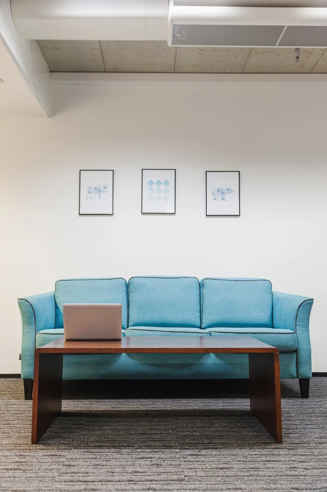
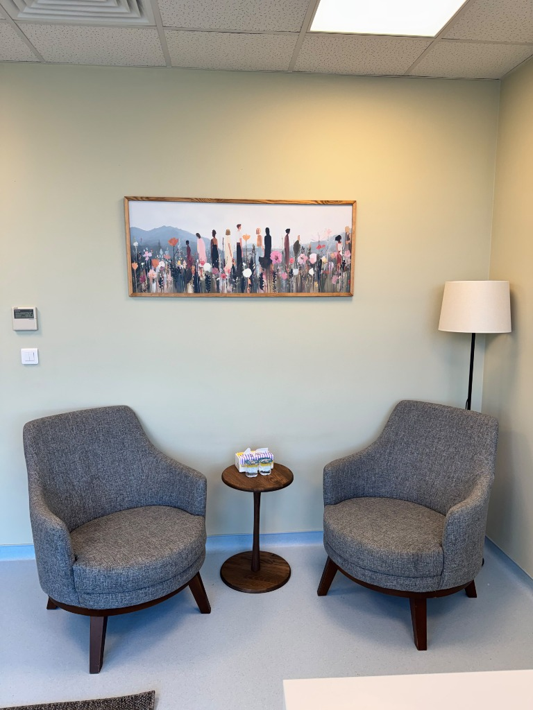
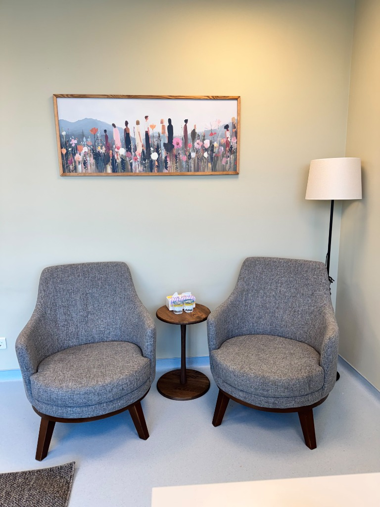
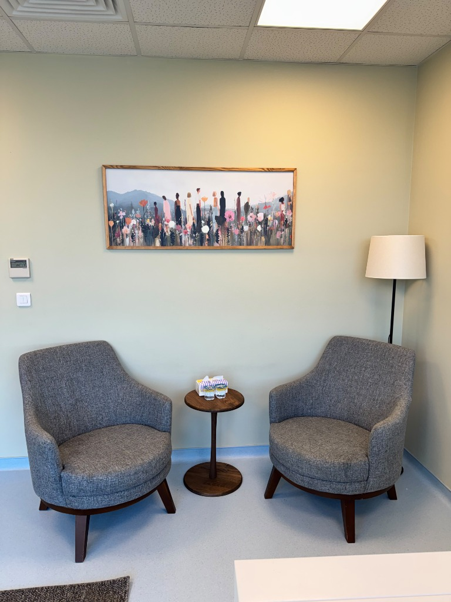
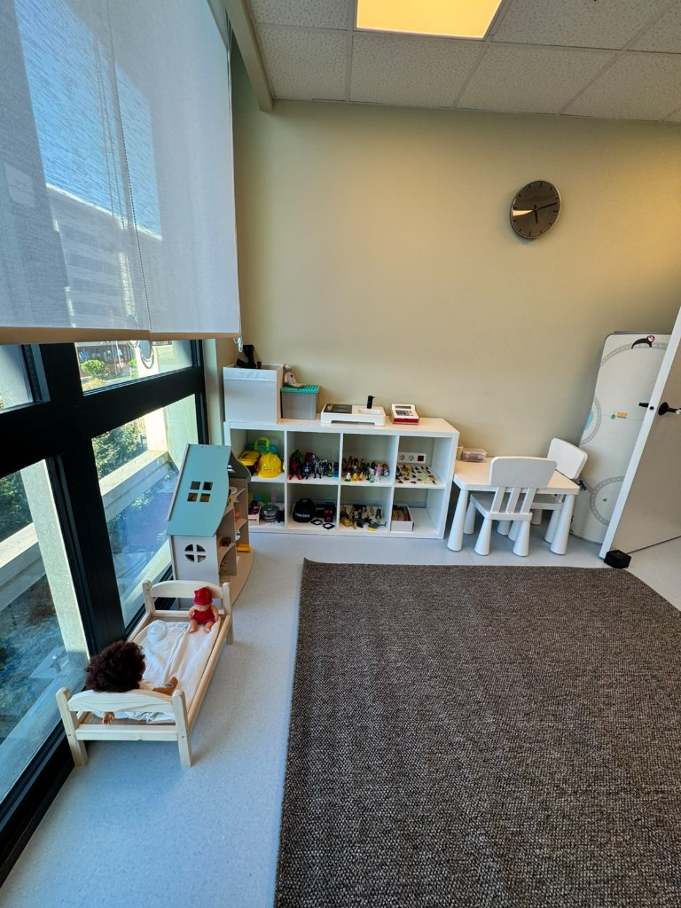
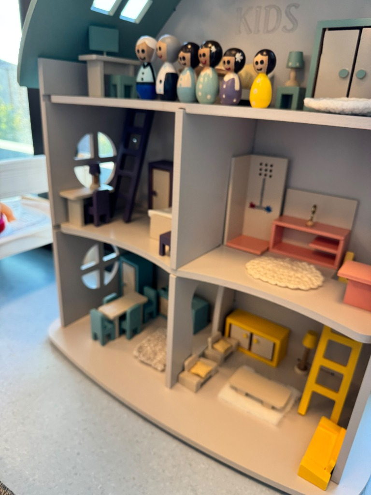
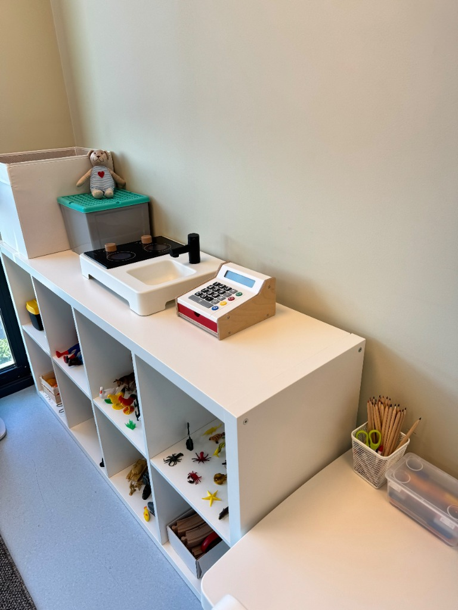
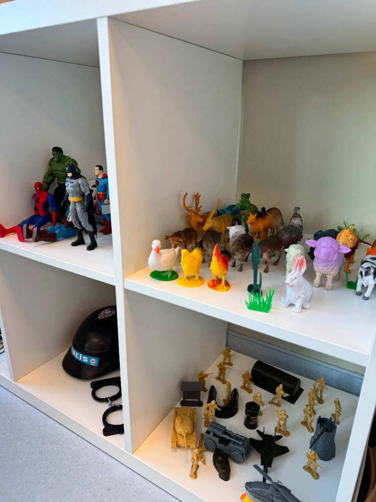

İlk adımı atın.
Randevu formu veya e-posta üzerinden iletişime geçin. Yüz yüze ya da online görüşme talebinizi paylaşın.
Bilimsel yaklaşımları temel alan, her yaş grubunun ihtiyacına özel olarak planlanmış yüz yüze ve online psikoterapi süreçleri.

Anlaşılmak için
güvenli bir alan.
İhtiyaç duyduğunuz her alanda, bilimsel temelli ve iş birliğine dayalı bir yaklaşımla sürecinizi birlikte planlıyoruz.
Terapi sürecini tanıyınHangi çalışmanın size uygun olduğundan emin değilseniz, bunu ilk görüşmede birlikte netleştirebiliriz.
Duygularınızı, düşüncelerinizi ve yaşadığınız güçlükleri size özel bir görüşme alanında ele alırız. İhtiyaçlarınızı anlamaya ve kendinizle ilişkinizi keşfetmeye birlikte odaklanırız.
Bu çalışma hakkında konuşalımAile içindeki iletişimi, ilişkileri ve birlikte yaşanan güçlükleri ele alırız. Her aile üyesinin kendini ifade edebildiği bir çalışma alanı oluşturmayı amaçlarız.
Bu çalışma hakkında konuşalımÇocuğunuzu anlamak, ihtiyaçlarını fark etmek ve ebeveynlik sürecindeki sorularınızı ele almak için birlikte çalışırız. Yaşına ve sizin aile yaşamınıza uygun bir çerçeve oluştururuz.
Bu çalışma hakkında konuşalımÇocukların ve gençlerin yaşadıklarını, duygularını ve ilişkilerini gelişim dönemlerine uygun biçimde ele alırız. Süreci çocuğun ya da ergenin ihtiyaçları doğrultusunda şekillendiririz.
Bu çalışma hakkında konuşalımOyun, çocukların kendilerini ifade etme yollarından biridir. Duygularını ve deneyimlerini oyun yoluyla paylaşabildikleri, yaşlarına uygun bir terapi alanı sunarız.
Bu çalışma hakkında konuşalımMasallar ve hikâyeler üzerinden duyguların ifade edilmesine alan açarız. Çalışma biçimi ve kullanılan hikâyeler çocuğun yaşına ve ihtiyaçlarına göre belirlenir.
Bu çalışma hakkında konuşalımBelirli bir çalışma çerçevesinde, bir grup içinde deneyimlerin paylaşılmasına ve ilişkilerin ele alınmasına odaklanırız. Güncel grup çalışmaları hakkında bilgi almak için iletişime geçebilirsiniz.
Bu çalışma hakkında konuşalımYüz yüze görüşme için aynı yerde bulunamadığımızda, görüntülü görüşmeyle bir araya geliriz. Online çalışmanın ihtiyaçlarınıza uygunluğunu görüşme öncesinde birlikte değerlendiririz.
Bu çalışma hakkında konuşalımSeçmek zorunda değilsiniz. Birlikte konuşarak başlayabiliriz.

Uzman Klinik Psikolog İlayda Gürkan, çocuk, ergen ve yetişkinlerle psikoterapi çalışmalarını sürdürmektedir. Danışanlarının ihtiyaçlarını ve yaşam koşullarını gözeten, iş birliğine dayalı bir yaklaşım benimser.
Biruni Üniversitesi Rehberlik ve Psikolojik Danışmanlık lisans eğitiminin ardından Klinik Psikoloji yüksek lisansını tamamlamıştır. Psikoterapi çalışmalarında Bilişsel Davranışçı Terapi yaklaşımını temel alır. EABCT onaylı Bilişsel Davranışçı Terapi eğitimini tamamlamış olup, Bilişsel Davranışçı Psikoterapiler Derneği (BDPD) üyesidir.
Çocuklarla yürüttüğü çalışmalarda Bilişsel Davranışçı Oyun Terapisi ve Çocuk Merkezli Oyun Terapisi yaklaşımlarından yararlanır. Dikkat eksikliği ve özgül öğrenme güçlüğü de özel çalışma alanları arasındadır. Yüksek lisans çalışmasını özgül öğrenme güçlüğü üzerine yapmış; Disleksi Eğitici Eğitimi’ne katılmış ve Todi Cognit Bilişsel Müdahale Programı uygulayıcısı olmuştur.
Çocuk ve ergen süreçlerinde ebeveynlerle düzenli görüşmeler yaparak aileyle güçlü bir iş birliği içinde çalışmaktadır.
Her şeyin cevabını bilerek gelmeniz gerekmez. Süreci, ihtiyaçlarınız ve kendi hızınız doğrultusunda birlikte şekillendiririz.
Randevu formu veya e-posta üzerinden iletişime geçin. Yüz yüze ya da online görüşme talebinizi paylaşın.
İlk görüşmede sizi dinler, ihtiyaçlarınızı ve beklentilerinizi konuşuruz. Çalışma biçimini birlikte değerlendiririz.
Görüşmelerin devamını ihtiyaçlarınıza göre planlar, süreç içinde nasıl ilerlediğimizi birlikte gözden geçiririz.
Başlamak için kusursuz bir cümleye ihtiyacınız yok.
Randevu AlınGevşeyin ve hazır hissettiğinizde dairenin ritmine eşlik edin.
Bu kısa egzersiz terapinin yerini tutmaz. Rahatsızlık hissederseniz durup doğal nefesinize dönün.
Çocukların kendilerini güvende hissederek oyun aracılığıyla iç dünyalarını ifade edebilecekleri ve yetişkinlerin rahatça kendilerine odaklanabilecekleri özenle tasarlanmış terapi alanlarımız.







Sürece dair merak ettikleriniz için bana yazabilir veya detaylı bilgi talep edebilirsiniz.
Sorunuzu paylaşınBaşvuru nedeninizi, ihtiyaçlarınızı ve beklentilerinizi konuşuruz. İlk görüşme birbirimizi tanımak, süreci değerlendirmek ve uygun çalışma hedeflerini belirlemek için bir adımdır.
Görüntülü görüşmeyle bir araya geliriz. Kendinizi rahat hissedebileceğiniz, konuşmalarınızın duyulmayacağı bir ortam ve internet bağlantısı gerekir. Online çalışma biçiminin uygunluğunu görüşme öncesinde birlikte değerlendiririz.
Süre herkes için aynı değildir. İhtiyaçlarınız, çalışma hedefleri ve sürecin ilerleyişi doğrultusunda birlikte değerlendirilir.
Çocuğunuzun yaşını, gelişim dönemini ve başvuru nedenini konuşarak başlarız. Uygun çalışma biçimini ilk değerlendirme doğrultusunda birlikte belirleriz.
Aşağıdaki formdan randevu veya bilgi talebi oluşturabilir, doğrudan e-posta da gönderebilirsiniz. Görüşme biçimi, uygun zamanlar ve seans ücretleri için iletişime geçebilirsiniz.
Sürecin nasıl ilerlediği hakkında bilgi almak veya randevu oluşturmak için aşağıdaki formu kullanabilirsiniz.
ilayda.akyil@gmail.com@psikolog.ilaydagurkanAşağıdaki bilgilerle bir e-posta taslağı hazırlayın.